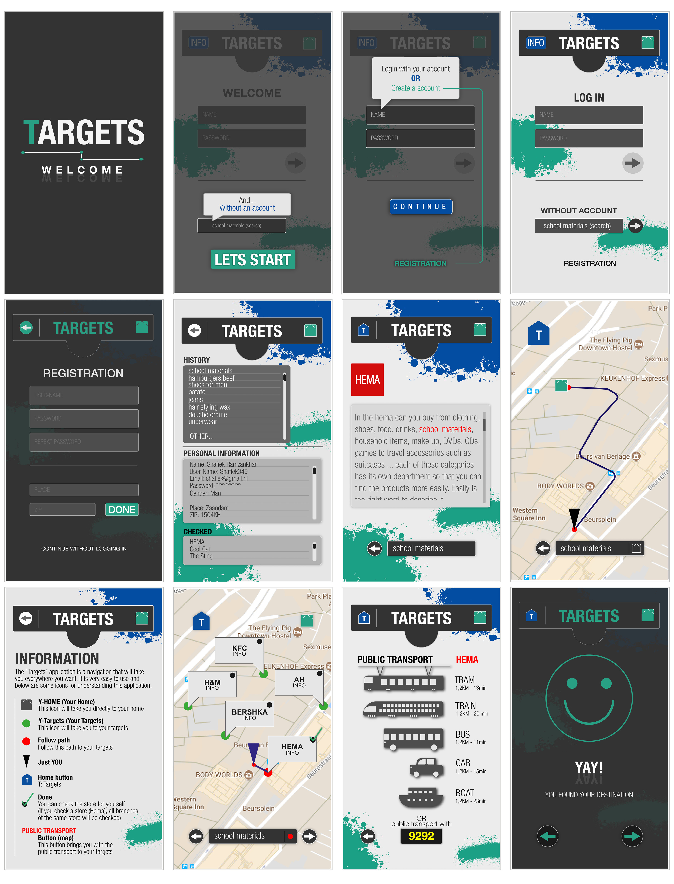
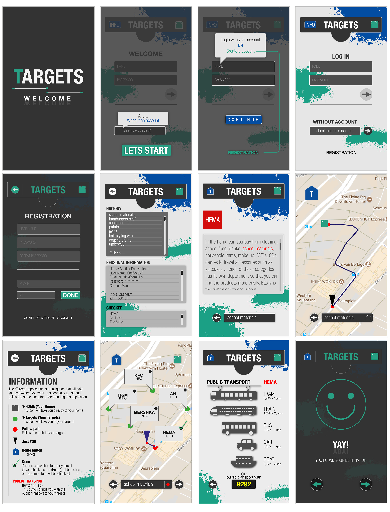
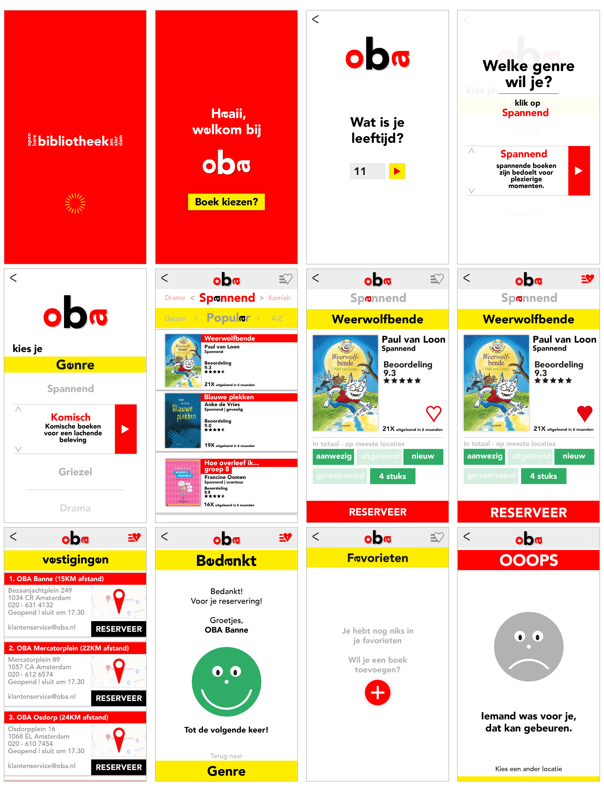
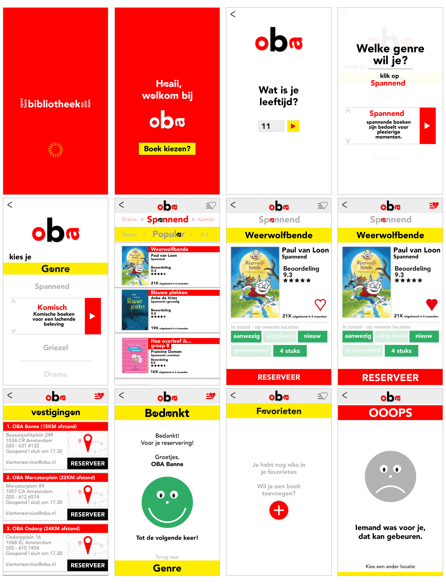
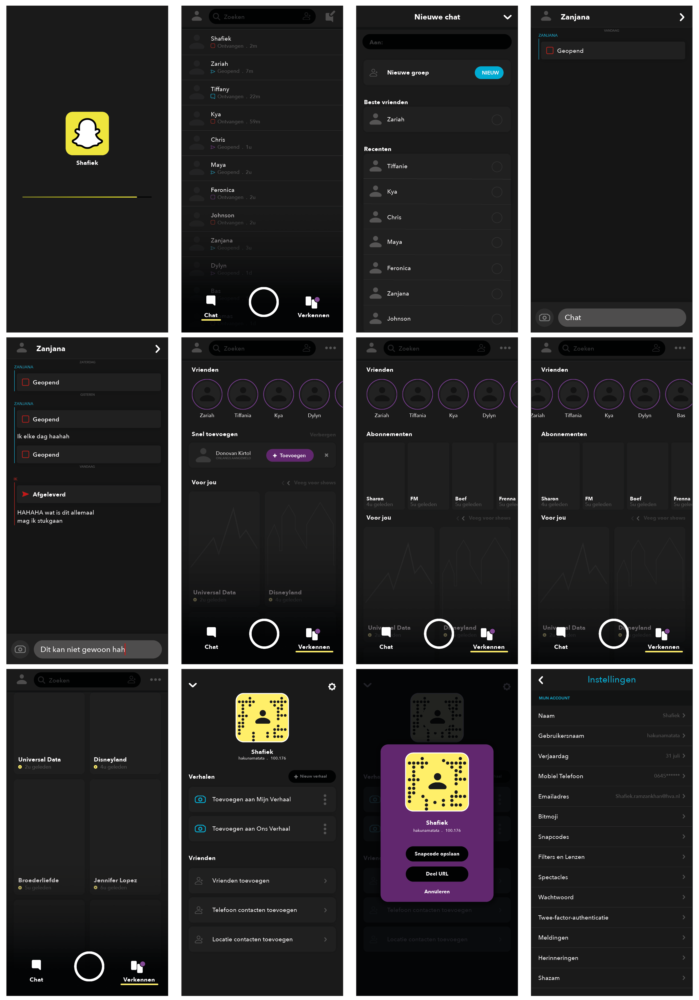
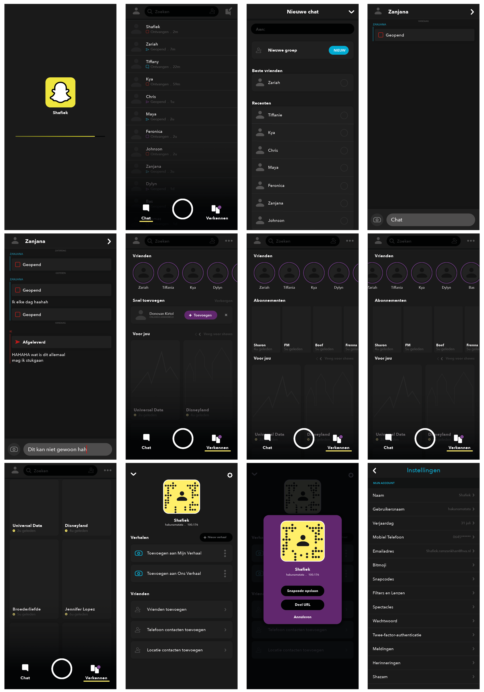
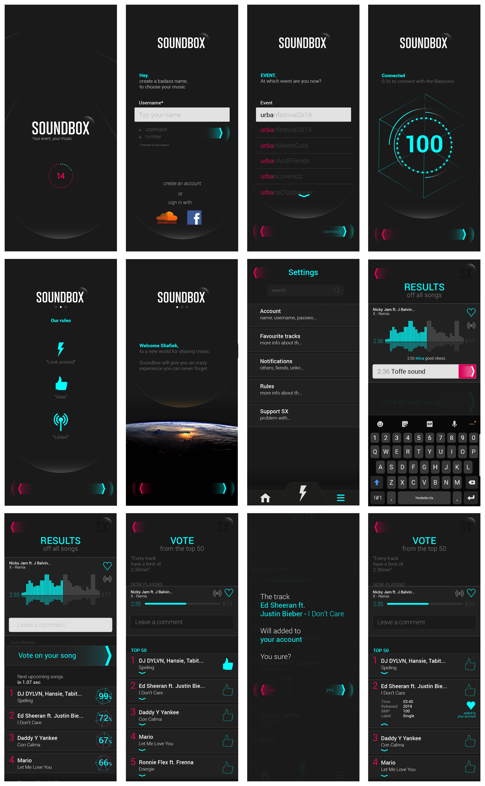
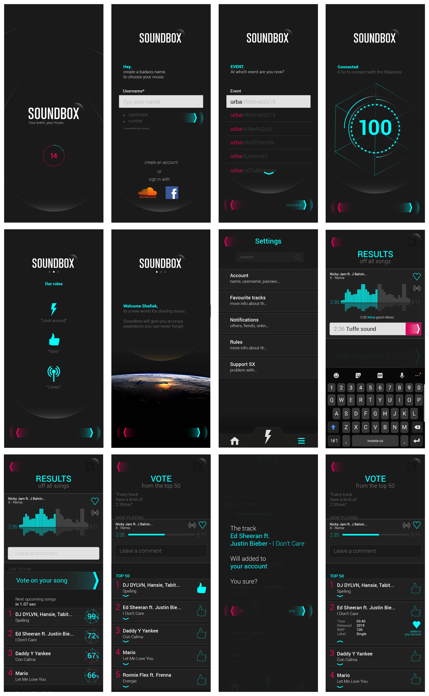

Nieuwe internationale studenten naar een de juiste doel brengen waar zij naar opzoek zijn.
Het doel kunnen consumpties, kleding, medicijnen zijn etc.

Applicacties met een eigen doel.
 

Nieuwe internationale studenten naar een de juiste doel brengen waar zij naar opzoek zijn.
Het doel kunnen consumpties, kleding, medicijnen zijn etc.
De app biedt een navigatie waar de internationale studenten alles kunne opzoeken.
 

Minderjarige kinderen een geschikte boek aanwijzen.
Openbare Bibliotheken Amsterdam is groot heeft een hoeveelheid voorraad van vele boeken waar gebruikers uit kunnen kiezen.
In de applicatie kunnen de kinderen filteren om een beschikt boek te vinden op te halen.
 

Darkmode van Snapchat ontwikkelen. Alles diapositieve elementen zijn naar dominantie gegaan.
Zoals je kunt zien heeft elke element van de applicatie een dominante-tint. Het gevolg van Dark Mode is verbetering voor het oog in de avond/nacht.


Een applicatie van een combinatie van Soundcloud en ADE. De applicatie is voor een verbetering voor het staan in de lange rijen van een evement.
De applicatie gaat om een stemmen van het bepaald muziek om alvast in de sfeer te komen van het evenement.
Naast de applicatie is er een beamer aanwezig die ermee is gecombineerd zodat vele gebruikers op de beamer kunnen kijken naar de resultaten van het aantal stemmen.
 

Deze app heeft precies dezelfde functie als de huidige SoundcloudBox app, alleen is dit een redesign.
Herhaling: Een applicatie van een combinatie van Soundcloud en ADE. De applicatie is voor een verbetering voor het staan in de lange rijen van een evement.
De applicatie gaat om een stemmen van het bepaald muziek om alvast in de sfeer te komen van het evenement.
Naast de applicatie is er een beamer aanwezig die ermee is gecombineerd zodat vele gebruikers op de beamer kunnen kijken naar de resultaten van het aantal stemmen.

Een website ontwerpen die temaken heeft met de kleur paars. Bij de kleur paars dacht ik aan het onbekende.
Een andere wereld. En daar leven we in, vooral in deze tijd kijken we naar een andere wereld.
Deze website geeft een beter ervaring door de hoeveelheid ontspanning die wij nodig hebben in deze tijd.
Denk maar aan de juiste films kijken en muziek luisteren.